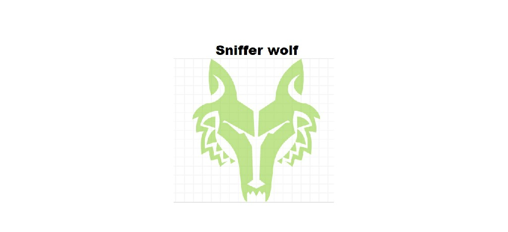
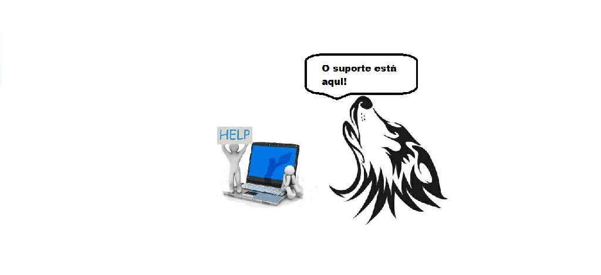

Nosso Objetivo
A Sniffer Wolf vem proporcionar monitoramento de servidores DNS.
Através de monitoramento de servidores, o Sniffer wolf fica olhando se existe algo errado no seu servidor. Com isso, se algo estiver errado, você será avisado via e-mail. Com um alerta do que está acontecendo com seu servidor

Como é nosso trabalho
Nosso trabalho é feito via SSH, que vai fazer um check-up no servidor monitorando e protejendo contra ataque de negação de serviço (DDoS). Sem falar da nosso equipe de tecnicos que estão de plantão 24 horas para melhor atender-lo você nosso cliente.
